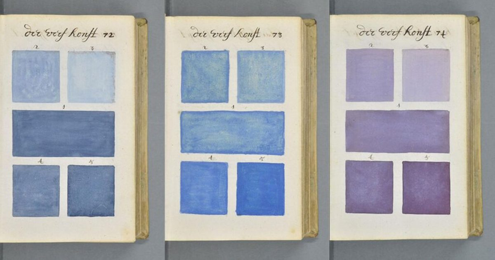

900-страничное предварительное руководство по цвету от 1692 года: полное цифровое сканирование с высоким разрешением
Это опережает свое время, тогда есть Traité des couleurs servant à la peinture à l'eau — или, в своем первоначальном голландском названии, Klaer Lightende Spiegel der Verfkonst, 900-страничная книга цветов краски, сделанная до того, как любые такие вещи стали обычными инструментами ремесла художника, ученого и промышленного дизайнера.
Автор и художник А.Богерт создал один, и …